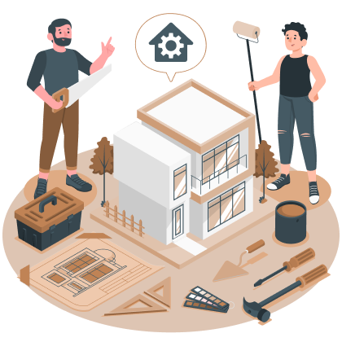
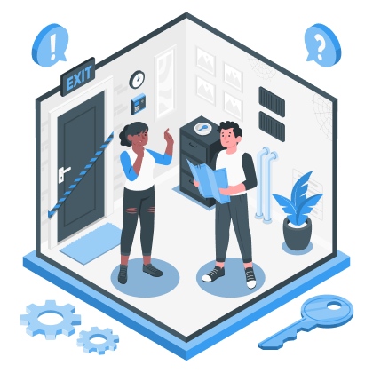

Your result
Your project type is…
Greenfield
You want to create a new product, service, journey or application, including replacing a legacy solution with a newly built target state.

Brownfield
You want to retain the existing application and deliver a feature, regulatory change or increment.

Modernisation
You want to transform an existing application by modernising its architecture, technology stack, framework, runtime, database, infrastructure or deployment model.